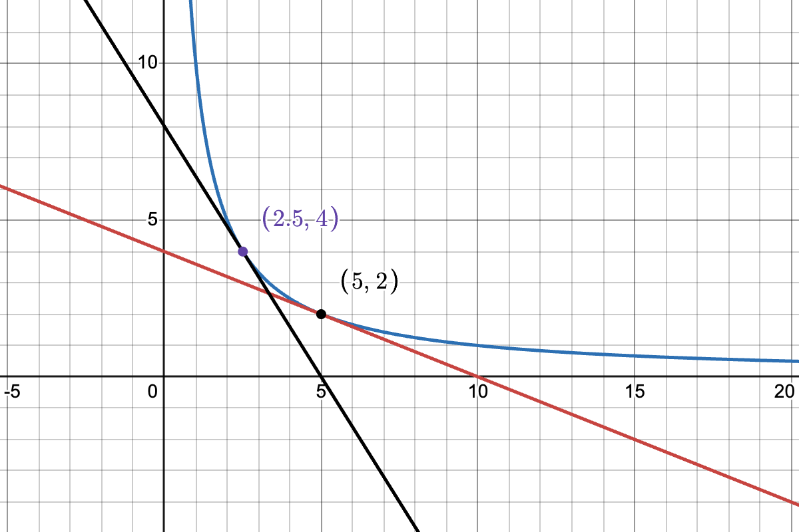
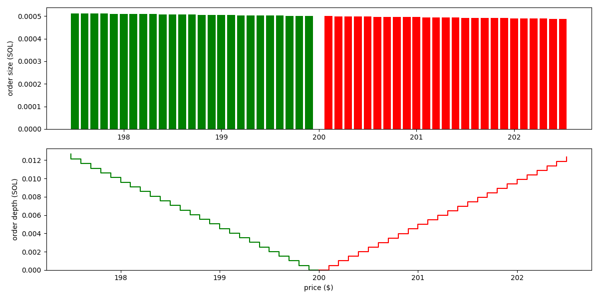
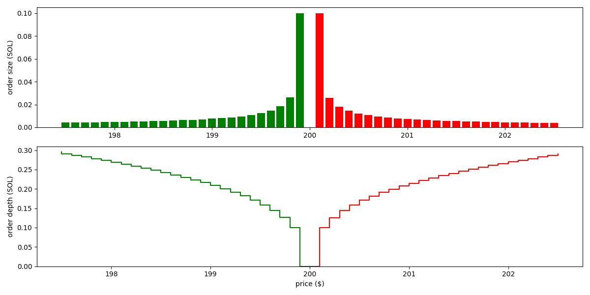
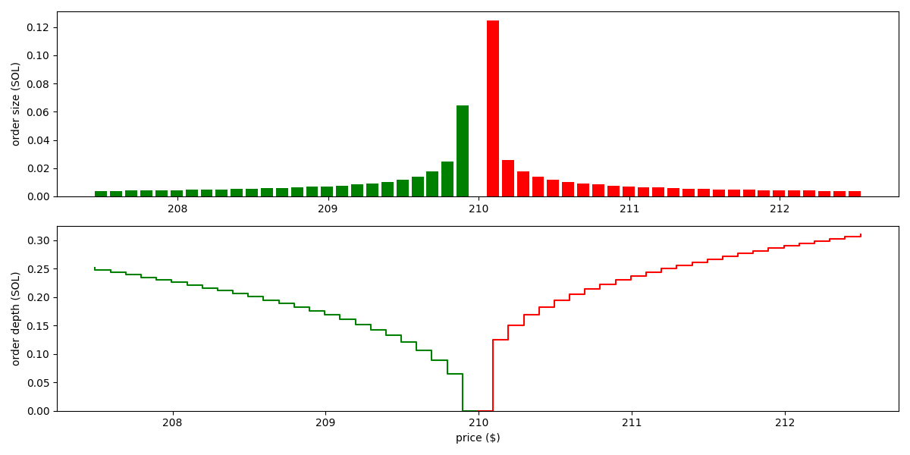

Welcome, stranger!
This is the Dango Book, everything about one place for all DeFi.
Passive liquidity on Dango DEX
Dango DEX is a fully onchain limit order book (LOB) exchange. It uses frequent batch auctions (FBAs), executed at the end of each block, to match orders. Otherwise, it's not dissimilar to other LOB exchanges, e.g. Hyperliquid.
A major downside of LOBs vs AMMs is that market making on LOBs requires a high level of sophistication, making it infeasible to average retail investors. As such, new LOB exchanges often need to enter into deals with professional market makers (MMs) to provide liquidity. This makes bootstrapping a new LOB exchange very challenging.
From the perspective of an unsophisticated investor who wishes to provide liquidity complete passively on major spot pairs (BTC-USD, ETH-USD, etc.), as of this time, their only options are Uniswap V3 (full range) and Curve V2. However, LP'ing on these AMMs have proven to be generally not profitable due to arbitrage trades.
Loss from arbitrage trades, measured by loss-versus-rebalancing (LVR), occurs when there's another, more liquid venue for trading the same pair, where price discovery primarily takes place. In crypto, this is typically the CEXs: Binance, Coinbase, Kraken, etc. Suppose BTC-USD is trading at 95,000. Then, upon a favorable news, it jumps to 96,000 on Binance. However, AMMs are completely passive--they never actively adjust quotes based on the news. As such, an arbitrageur can buy BTC at the stale price of 95,000 from the AMM, then sell on Binance for 96,000. LPs in the AMM takes the worse side of the trade. Over time, such losses accumulate and more often than not, outpace the gains from fees.
The objective
Create a passive liquidity pool that provides liquidity on Dango DEX, with the following properties:
- It will place limit orders in the LOB following a predefined strategy, such as an oracle-informed AMM curve.
- It aims to be the backstop liquidity. Meaning, it doesn't need to quote aggressively with super tight spreads. We anticipate professional MMs will take that role. The pool will quote wider (thus taking less risk), and be the backstop in case a big trade eats up all the orders from MMs.
- It targets majors (BTC, ETH, SOL, etc.) and should be LVR-resistant. At Dango, we want to maximize the benefit of LPs by discouraging arbitrage flow.
- It doesn't aim to be resistant to impermanent loss (IL). However, once we ship perpetual futures trading on Dango, we imagine there will be actively managed "vaults" that combine the LP pool and hedging strategies using perps.
Order placement
Let's discuss how the pool may determine what orders to place in the LOB. Let's think of the simplest strategy: the constant product curve ("xyk curve").
Consider a BTC-USD pool that currently contains units of BTC (the "base asset") and units of USD (the "quote asset"). The state of the pool can be considered a point on the curve , where is a constant that quantifies how much liquidity there is in the pool. When a trade happens, the state moves to a different point on the same curve (that is, without considering any fee).
Generally, for any AMM curve , we define the concept of marginal price as:
For the xyk curve, this is:
is the price, denoted as the units of quote asset per one unit of base asset (that is, over ), of trading an infinitesimal amount of one asset to the other. On a graph, it is the slope of the tangent line that touches the curve at the point .

Let's imagine the pool starts from the state of ; marginal price USD per BTC.
At this time, if a trader swaps 2 units of USD to 2.5 units of BTC, the state would move to the point , marginal price USD per BTC.
We interpret this as follows: under the state of and following the strategy defined by the xyk curve, the pool offers to sell 2.5 units of BTC over the price range of 0.4--1.6 USD per BTC.
Translating this to the context of orderbook, this means the pool would place SELL orders of sizes totalling 2.5 units of BTC between the prices 0.4 and 1.6.
Following this logic, we can devise the following algorithm to work out all the SELL orders that the pool would place:
- The pool is parameterized by spread and "bin size" .
- Start from the marginal price (we denote this simply as from here on).
- The pool would not place any order here. We say the total order size here is zero.
- Move on to the "bin" at price (marginal price plus the half spread).
- This is the price at which the pool will place its first SELL order.
- Using the approach discussed above, find the total order size between the prices and . This is the size of the order to be place here.
- Move on to the next "bin", at price .
- Using the approach discussed above, find the total order size between the prices and .
- Subtract the total order size between and , this is the order size to be placed here.
- Do the same for , , ... until liquidity runs out (total order size ).
With the same approach, we can work out all the BUY orders for prices below .
For the xyk curve, the orders are visualized as follows (based on the state , and parameters , ):

We see the pool places orders of roughtly the same size across a wide price range. That is, the liquidity isn't concentrated.
As example for a concentrated liquidity curve, the Solidly curve results in the following orders:

As we see, liquidity is significantly more concentrated here.
Tackling arbitrage loss
In order to discourage arbitrage flow, the pool needs to actively adjusts its quote based on the prices trading at other more liquid venues (the CEXs, in our case).
To achieve this, we simply introduce an oracle price term into the AMM invariant. Suppose the oracle price is . Instead of , we simply use the curve:
The xyk and Solidly curves become the following, respectively:
Following the same example with Solidly above, but set oracle price to (higher than the margin price of 200), the orders become:

As we see, the pool now quotes around the price of 210. It places bigger orders on the SELL side than the BUY side, demonstrating that it has a tendency to reduce its holding of the base asset, so that its inventory goes closer the ratio of 1:210 as the oracle indicates.
Oracle risk
The biggest risk of an oracle-informed AMM is that the oracle reports incorrect prices. For example, if BTC is trading at 95,000, but the oracle says the price is 0.0001, then traders are able to buy BTC from Dango at around 0.0001, resulting in almost total loss for our LPs.
To reduce the chance of this happening, we plan to employ the following:
- Use a low latency oracle, specifically Pyth's 10 ms or 50 ms feed.
- Pyth prices come with a confidence range, meaning a range it thinks there's a 95% probability the true price is in. Our parameter should be configured to be similar or larger than this.
- Make the oracle a part of our block building logic. A block is invalid if it doesn't contain an oracle price. The block producer must submit the price in a transaction on the top of the block.
- The LP pool is given priority to adjust its orders in response to the oracle price before anyone else. Specifically, since we use FBA, the LP pool is allowed to adjust its orders prior to the auction.
- Implement circuit breakers, that if triggered, the LP pool would cancel all its orders and do nothing, until the situation goes back to normal. These can include:
- Oracle price is too old (older than a given threshold).
- Oracle price makes too big of a jump (e.g. it goes from 95,000 to 0.0001).
Open questions
- A Professional market maker usually doesn't place orders around the oracle price, but rather computes a "reservation price" based on the oracle price as well as his current inventory. Additionally, he usually doesn't use equal spread on both sides, but rather skewed spreads based on inventory. A classic model for computing these is that by Avellaneda and Stoikov. Our model do not do these.
- Whereas Solidly is the simplest concentrated liquidity curve (simpler than Curve V1 or V2), it's still quite computationally heavy. We need to solve a quartic (4th degree polynomial) equation using Newton's method, for each "bin", each block. We would like to explore simpler concentrated liquidity curves.
Audits
A list of audits we have completed so far:
| Time | Auditor | Subject | Links |
|---|---|---|---|
| 2025-04-07 | Zellic | Hyperlane | report |
| 2025-04-02 | Zellic | Account and authentication system | report |
| 2024-10-25 | Zellic | Jellyfish Merkle Tree (JMT) | report |
| Q4 2024 | Informal Systems | Formal specification of JMT in Quint | blog • spec |
Bounded values
A common situation developers find themselves in is their contract needs to take a value that must been within a certain bound.
For example, a fee rate should be within the range of 0~1. It doesn't make sense to charge more than 100% fee. Whenever a fee rate is provided, the contract needs to verify it's within the bounds, throwing error if not:
#![allow(unused)] fn main() { #[grug::derive(Serde)] struct InstantiateMsg { pub fee_rate: Udec256, } #[grug::export] fn instantiate(ctx: MutableCtx, msg: InstantiateMsg) -> anyhow::Result<Response> { ensure!( Udec256::ZERO <= fee_rate && fee_rate < Udec256::ONE, "fee rate is out of bounds" ); Ok(Response::new()) } }
We call this an imperative approach for working with bounded values.
The problem with this is that the declaration and validation of fee_rate are in two places, often in two separate files. Sometimes developers simply forget to do the validation.
Instead, Grug encourages a declarative approach. We declare the valid range of a value at the time we define it, utilizing the Bounded type and Bounds trait:
#![allow(unused)] fn main() { use grug::{Bounded, Bounds}; use std::ops::Bound; struct FeeRateBounds; impl Bounds<Udec256> for FeeRateBounds { const MIN: Bound<Udec256> = Bound::Inclusive(Udec256::ZERO); const MAX: Bound<Udec256> = Bound::Exclusive(Udec256::ONE); } type FeeRate = Bounded<Udec256, FeeRateBounds>; #[grug::derive(Serde)] struct InstantiateMsg { pub fee_rate: FeeRate, } #[grug::export] fn instantiate(ctx: MutableCtx, msg: InstantiateMsg) -> anyhow::Result<Response> { // No need to validate the fee rate here. // Its bounds are already verified when `msg` is deserialized! Ok(Response::new()) } }
Entry points
Each Grug smart contract presents several predefined Wasm export functions known as entry points. The state machine (also referred to as the host) executes or makes queries at contracts by calling these functions. Some of the entry points are mandatory, while the others are optional. The Grug standard library provides an #[grug::export] macro which helps defining entry points.
This page lists all supported entry points, in Rust pseudo-code.
Memory
These two are auto-implemented. They are used by the host to load data into the Wasm memory. The contract programmer should not try modifying them.
#![allow(unused)] fn main() { #[no_mangle] extern "C" fn allocate(capacity: u32) -> u32; #[no_mangle] extern "C" fn deallocate(region_ptr: u32); }
Basic
These are basic entry points that pretty much every contract may need to implement.
#![allow(unused)] fn main() { #[grug::export] fn instantiate(ctx: MutableCtx, msg: InstantiateMsg) -> Result<Response>; #[grug::export] fn execute(ctx: MutableCtx, msg: ExecuteMsg) -> Result<Response>; #[grug::export] fn migrate(ctx: MutableCtx, msg: MigrateMsg) -> Result<Response>; #[grug::export] fn receive(ctx: MutableCtx) -> Result<Response>; #[grug::export] fn reply(ctx: SudoCtx, msg: ReplyMsg, result: SubMsgResult) -> Result<Response>; #[grug::export] fn query(ctx: ImmutableCtx, msg: QueryMsg) -> Result<Binary>; }
Fee
In Grug, gas fees are handled by a smart contract called the taxman. It must implement the following two exports:
#![allow(unused)] fn main() { #[grug::export] fn withhold_fee(ctx: AuthCtx, tx: Tx) -> Result<Response>; #[grug::export] fn finalize_fee(ctx: AuthCtx, tx: Tx, outcome: Outcome) -> Result<Response>; }
Authentication
These are entry points that a contract needs in order to be able to initiate transactions.
#![allow(unused)] fn main() { #[grug::export] fn authenticate(ctx: AuthCtx, tx: Tx) -> Result<Response>; #[grug::export] fn backrun(ctx: AuthCtx, tx: Tx) -> Result<Response>; }
Bank
In Grug, tokens balances and transfers are handled by a contract known as the bank. It must implement the following two exports:
#![allow(unused)] fn main() { #[grug::export] fn bank_execute(ctx: SudoCtx, msg: BankMsg) -> Result<Response>; #[grug::export] fn bank_query(ctx: ImmutableCtx, msg: BankQuery) -> Result<BankQueryResponse>; }
Cronjobs
The chain's owner can appoint a number of contracts to be automatically invoked at regular time intervals. Each such contract must implement the following entry point:
#![allow(unused)] fn main() { #[grug::export] fn cron_execute(ctx: SudoCtx) -> Result<Response>; }
IBC
Contracts that are to be used as IBC light clients must implement the following entry point:
#![allow(unused)] fn main() { #[grug::export] fn ibc_client_query(ctx: ImmutableCtx, msg: IbcClientQuery) -> Result<IbcClientQueryResponse>; }
Contracts that are to be used as IBC applications must implement the following entry points:
#![allow(unused)] fn main() { #[grug::export] fn ibc_packet_receive(ctx: MutableCtx, msg: IbcPacketReceiveMsg) -> Result<Response>; #[grug::export] fn ibc_packet_ack(ctx: MutableCtx, msg: IbcPacketAckMsg) -> Result<Response>; #[grug::export] fn ibc_packet_timeout(ctx: MutableCtx, msg: IbcPacketTimeoutMsg) -> Result<Response>; }
Extension traits
In Grug, we make use of the extension trait pattern, which is well explained by this video.
To put it simply, a Rust library has two options on how to ship a functionality: to ship a function, or to ship a trait.
For instance, suppose our library needs to ship the functionality of converting Rust values to strings.
Shipping a function
The library exports a function:
#![allow(unused)] fn main() { pub fn to_json_string<T>(data: &T) -> String where T: serde::Serialize, { serde_json::to_string(data).unwrap_or_else(|err| { panic!("failed to serialize to JSON string: {err}"); }) } }
The consumer imports the function:
#![allow(unused)] fn main() { use grug::to_json_string; let my_string = to_json_string(&my_data)?; }
Shipping a trait
The library exports a trait, and implements the trait for all eligible types.
The trait is typically named {...}Ext where "Ext" stands for extension, because the effectively extends the functionality of types that implement it.
#![allow(unused)] fn main() { pub trait JsonSerExt { fn to_json_string(&self) -> String; } impl<T> JsonSerExt for T where T: serde::Serialize, { fn to_json_string(&self) -> String { serde_json::to_string(data).unwrap_or_else(|err| { panic!("failed to serialize to JSON string: {err}"); }) } } }
The consumer imports the trait:
#![allow(unused)] fn main() { use grug::JsonSerExt; let my_string = my_data.to_json_string()?; }
Extension traits in Grug
We think the consumer's syntax with extension traits is often more readable than with functions. Therefore we use this pattern extensively in Grug.
In grug-types, we define functionalities related to hashing and serialization with following traits:
Borsh{Ser,De}ExtProto{Ser,De}ExtJson{Ser,De}ExtHashExt
Additionally, there are the following in grug-apps, which provides gas metering capability to storage primitives including Item and Map, but they are only for internal use and not exported:
MeteredStorageMeteredItemMeteredMapMeteredIterator
Gas
Some thoughts on how we define gas cost in Grug.
The Wasmer runtime provides a Metering middleware that measures how many "points" a Wasm function call consumes.
The question is how to associate Wasmer points to the chain's gas units.
CosmWasm's approach
As documented here, CosmWasm's approach is as follows:
-
Perform a benchmark to measure how many "points" Wasmer can execute per second. Then, set a target amount of gas per second (they use 10^12 gas per second). Between these two numbers, CosmWasm decides that 1 Wasmer point is to equal 170 gas units.
-
Perform another benchmark to measure how much time it takes for the host to execute each host function (e.g.
addr_validateorsecp256k1_verify). Based on this, assign a proper gas cost for each host function. -
Divide CosmWasm gas by a constant factor of 100 to arrive at Cosmos SDK gas.
Our approach
For us, defining gas cost is easier, because we don't have a Cosmos SDK to deal with.
-
We skip step 1, and simply set 1 Wasmer point = 1 Grug gas unit.
-
We perform the same benchmarks to set proper gas costs for host functions.
-
We skip this step as well.
In summary,
- 1 Cosmos SDK gas = 100 CosmWasm gas
- 1 Wasmer point = 170 CosmWasm gas
- 1 Wasmer point = 1 Grug gas
Benchmark results
Benchmarks were performed on a MacBook Pro with the M2 Pro CPU.
Relevant code can be found in crates/vm/wasm/benches and crates/crypto/benches.
Wasmer points per second
This corresponds to the step 1 above. This benchmark is irrelevant for our decision making (as we simply set 1 Wasmer point = 1 Grug gas unit), but we still perform it for good measure.
| Iterations | Points | Time (ms) |
|---|---|---|
| 200,000 | 159,807,119 | 15.661 |
| 400,000 | 319,607,119 | 31.663 |
| 600,000 | 479,407,119 | 47.542 |
| 800,000 | 639,207,119 | 62.783 |
| 1,000,000 | 799,007,154 | 78.803 |
Extrapolating to 1 second, we arrive at that WasmVm executes 10,026,065,176 points per second. Let's round this to 10^10 points per second, for simplicity.
If we were to target 10^12 gas units per second as CosmWasm does (we don't), this would mean 10^12 / 10^10 = 100 gas units per Wasmer point.
This is roughly in the same ballpark as CosmWasm's result (170 gas units per Wasmer point). The results are of course not directly comparable because they were done using different CPUs, but the numbers being within one degree of magnitude suggests the two VMs are similar in performance.
As said before, we set 1 Wasmer point = 1 gas unit, so we're doing 10^10 gas per second.
Single signature verification
Time for verifying one signature:
| Verifier | Time (ms) | Gas Per Verify |
|---|---|---|
secp256r1_verify | 0.188 | 1,880,000 |
secp256k1_verify | 0.077 | 770,000 |
secp256k1_pubkey_recover | 0.158 | 1,580,000 |
ed25519_verify | 0.041 | 410,000 |
We have established that 1 second corresponds to 10^10 gas units. Therefore, secp256k1_verify costing 0.188 millisecond means it should cost = 770,000 gas.
This is comparable to CosmWasm's value.
Batch signature verification
ed25519_batch_verify time for various batch sizes:
| Batch Size | Time (ms) |
|---|---|
| 25 | 0.552 |
| 50 | 1.084 |
| 75 | 1.570 |
| 100 | 2.096 |
| 125 | 2.493 |
| 150 | 2.898 |
Linear regression shows there's a flat cost 0.134 ms (1,340,000 gas) plus 0.0188 ms (188,000 gas) per item.
Hashes
Time (ms) for the host to perform hashes on inputs of various sizes:
| Hasher | 200 kB | 400 kB | 600 kB | 800 kB | 1,000 kB | Gas Per Byte |
|---|---|---|---|---|---|---|
sha2_256 | 0.544 | 1.086 | 1.627 | 2.201 | 2.718 | 27 |
sha2_512 | 0.330 | 0.678 | 0.996 | 1.329 | 1.701 | 16 |
sha3_256 | 0.298 | 0.606 | 0.918 | 1.220 | 1.543 | 15 |
sha3_512 | 0.614 | 1.129 | 1.719 | 2.328 | 2.892 | 28 |
keccak256 | 0.312 | 0.605 | 0.904 | 1.222 | 1.534 | 15 |
blake2s_256 | 0.305 | 0.632 | 0.907 | 1.212 | 1.526 | 15 |
blake2b_512 | 0.180 | 0.364 | 0.552 | 0.719 | 0.917 | 9 |
blake3 | 0.105 | 0.221 | 0.321 | 0.411 | 0.512 | 5 |
Generate dependency graph
Dependency relations of the crates in this repository are described by the following Graphviz code:
digraph G {
node [fontname="Helvetica" style=filled fillcolor=yellow];
account -> ffi;
account -> storage;
account -> types;
bank -> ffi;
bank -> storage;
bank -> types;
taxman -> bank;
taxman -> ffi;
taxman -> storage;
taxman -> types;
testing -> app;
testing -> account;
testing -> bank;
testing -> crypto;
testing -> "db/memory";
testing -> taxman;
testing -> types;
testing -> "vm/rust";
app -> storage;
app -> types;
client -> jmt;
client -> types;
"db/disk" -> app;
"db/disk" -> jmt;
"db/disk" -> types;
"db/memory" -> app;
"db/memory" -> jmt;
"db/memory" -> types;
ffi -> types;
jmt -> storage;
jmt -> types;
std -> client;
std -> ffi;
std -> macros;
std -> storage;
std -> testing;
std -> types;
storage -> types;
"vm/rust" -> app;
"vm/rust" -> crypto;
"vm/rust" -> types;
"vm/wasm" -> app;
"vm/wasm" -> crypto;
"vm/wasm" -> types;
}
Install Graphviz CLI on macOS:
brew install graphviz
Generate SVG from a file:
dot -Tsvg input.dot
Generate SVG from stdin:
echo 'digraph { a -> b }' | dot -Tsvg > output.svg
Alternatively, use the online visual editor.
Indexed map
An IndexedMap is a map where each record is indexed not only by the primary key, but also by one or more other indexes.
For example, consider limit orders in an oracle-based perpetual futures protocol. For simplicity, let's just think about buy orders:
#![allow(unused)] fn main() { struct Order { pub trader: Addr, pub limit_price: Udec256, pub expiration: Timestamp, } }
For each order, we generate a unique OrderId, which can be an incrementing number, and store orders in a map indexed by the IDs:
#![allow(unused)] fn main() { const ORDERS: Map<OrderId, Order> = Map::new("order"); }
During the block, users submit orders. Then, at the end of the block (utilizing the after_block function), a contract is called to do two things:
- Find all buy orders with limit prices below the oracle price; execute these orders.
- Find all orders with expiration time earlier than the current block time; delete these orders.
To achieve this, the orders need to be indexed by not only the order IDs, but also their limit prices and expiration times.
For this, we can convert Orders to the following IndexedMap:
#![allow(unused)] fn main() { #[index_list] struct OrderIndexes<'a> { pub limit_price: MultiIndex<'a, OrderId, Udec256, Order>, pub expiration: MultiIndex<'a, OrderId, Timestamp, Order>, } const ORDERS: IndexedMap<OrderId, Order, OrderIndexes> = IndexedMap::new("orders", OrderIndexes { limit_price: MultiIndex::new( |order| *order.limit_price, "owners", "orders__price", ), expiration: MultiIndex::new( |order| *order.expiration, "owners", "orders__exp", ), }); }
Here we use MultiIndex, which is an index type where multiple records in the map can have the same index. This is the appropriate choice here, since surely it's possible that two orders have the same limit price or expiration.
However, in cases where indexes are supposed to be unique (no two records shall have the same index), UniqueIndex can be used. It will throw an error if you attempt to save two records with the same index.
To find all orders whose limit prices are below the oracle price:
#![allow(unused)] fn main() { fn find_fillable_orders( storage: &dyn Storage, oracle_price: Udec256, ) -> StdResult<Vec<(OrderId, Order)>> { ORDERS .idx .limit_price .range(storage, None, Some(oracle_price), Order::Ascending) .map(|item| { // This iterator includes the limit price, which we don't need. let (_limit_price, order_id, order) = item?; Ok((order_id, order)) }) .collect() } }
Similarly, find and purge all orders whose expiration is before the current block time:
#![allow(unused)] fn main() { fn purge_expired_orders( storage: &mut dyn Storage, block_time: Timestamp, ) -> StdResult<()> { // We need to first collect order IDs into a vector, because the iteration // holds an immutable reference to `storage`, while the removal operations // require a mutable reference to it, which can't exist at the same time. let order_ids = ORDERS .index .expiration .range(storage, None, Some(block_time), Order::Ascending) .map(|item| { let (_, order_id, _) = item?; Ok(order_id) }) .collect::<StdResult<Vec<OrderId>>>()?; for order_id in order_ids { ORDERS.remove(storage, order_id); } Ok(()) } }
Liquidity provision
Given a liquidity pool consisting of two assets, A and B, and the invariant , where and are the amounts of the two assets in the pool (the "pool reserve"). For simplicity, we denote this as .
Suppose a user provides liquidity with amounts and . After the liquidity is added, the invariant value is . For simplicity, we denote this as .
Suppose before adding the liquidity, the supply of LP token is . We mint user new LP tokens of the following amount:
Here, is a fee rate we charge on the amount of LP tokens mint. Without this fee, the following exploit would be possible: provide unbalanced liquidity, then immediately withdraw balanced liquidity. This effectively achieves a fee-less swap.
The fee rate should be a function over , reflecting how unbalance the user liquidity is:
- If user liquidity is prefectly balanced, that is, , fee rate should be zero: .
- If user liquidity is prefertly unbalanced, that is, one-sided (e.g. but ), then the fee rate should be a value such that if the attack is carried out, the output is equal to doing a swap normally.
Our objective for the rest of this article, is to work out the expression of the fee function .
Fee rate
Consider the case where the user liquidity is unbalanced. Without losing generality, let's suppose . That is, the user provides a more than abundant amount of A, and a less than sufficient amount of B.
Scenario 1
In the first scenario, the user withdraws liquidity immediately after provision. He would get:
Here, is the portion of the pool's liquidity owned by the user. We can work out its expression as:
where , which represents how much the invariant increases as a result of the added liquidity.
Scenario 2
In the second scenario, the user does a swap of amount of A into amount of B, where is the swap fee rate, which is a constant. The swap must satisfy the invariant:
The user now has amount of A and amount of B.
As discussed in the previous section, we must choose a fee rate such that the two scenarios are equivalent. This means the user ends up with the same amount of A and B in both scenarios:
We can rearrange these into a cleaner form:
We can use the first equation to work out either or , and put it into the second equation to get .
Xyk pool
The xyk pool has the invariant:
Our previous system of equations takes the form:
TODO...
Margin account: health
The dango-lending contract stores a collateral power for each collateral asset, and a Market for each borrowable asset:
#![allow(unused)] fn main() { const COLLATERAL_POWERS: Item<BTreeMap<Denom, Udec128>> = Item::new("collateral_power"); const MARKETS: Map<&Denom, Market> = Map::new("market"); }
- An asset may be a collateral asset but not a borrowable asset, e.g. wstETH, stATOM, LP tokens. But typically all borrowable assets are also collateral assets, such that when a margin account borrows an asset, this asset counts both as collateral and debt.
- Collateral powers are to be bounded in the range
[0, 1). An asset with lower volatility and more abundant liquidity gets bigger collateral power, vise versa. - We may store all collateral powers in a single
Item<BTreeMap<Denom, Udec128>>if we don't expect to support too many collateral assets.
Suppose:
- a margin account has collateral assets and debts
- the price of an asset is
- the collateral power of an asset is
The account's utilization is:
In the backrun function, the margin account asserts . If not true, it throws an error to revert the transaction.
The frontend should additionally have a max_ltv, somewhat smaller than 1, such as 95%. It should warn or prevent users from doing anything that results in their utilization going bigger than this, such that their account isn't instantly liquidated.
Math
Rust's primitive number types are insufficient for smart contract use cases, for three main reasons:
-
Rust only provides up to 128-bit integers, while developers often have to deal with 256- or even 512-bit integers. For example, Ethereum uses 256-bit integers to store ETH and ERC-20 balances, so if a chain has bridged assets from Ethereum, their amounts may need to be expressed in 256-bit integers. If the amounts of two such asset are to be multiplied together (which is common in AMMs), 512-bit integers may be necessary.
-
Rust does not provide fixed-point decimal types, which are commonly used in financial applications (we don't want to deal with precision issues with floating-point numbers such as
0.1+0.2=0.30000000000000004). Additionally, there are concerns over floating-point non-determinism, hence it's often disabled in blockchains. -
Grug uses JSON encoding for data that go in or out of contracts. However, JSON specification (RFC 7159) only guarantees support for integer numbers up to
(2**53)-1. Any number type that may go beyond this limit needs to be serialized to JSON strings instead.
Numbers in Grug
Grug provides a number of number types for use in smart contracts. They are built with the following two primitive types:
| type | description |
|---|---|
Int<U> | integer |
Dec<U> | fixed-point decimal |
It is, however, not recommended to use these types directly. Instead, Grug exports the following type alises:
| alias | type | description |
|---|---|---|
Uint64 | Int<u64> | 64-bit unsigned integer |
Uint128 | Int<u128> | 128-bit unsigned integer |
Uint256 | Int<U256> | 256-bit unsigned integer |
Uint512 | Int<U512> | 512-bit unsigned integer |
Int64 | Int<i64>> | 64-bit signed integer |
Int128 | Int<i128>> | 128-bit signed integer |
Int256 | Int<I256>> | 256-bit signed integer |
Int512 | Int<I512>> | 512-bit signed integer |
Udec128 | Dec<i128> | 128-bit unsigned fixed-point number with 18 decimal places |
Udec256 | Dec<I256> | 256-bit unsigned fixed-point number with 18 decimal places |
Dec128 | Dec<i128>> | 128-bit signed fixed-point number with 18 decimal places |
Dec256 | Dec<I256>> | 256-bit signed fixed-point number with 18 decimal places |
where {U,I}{256,512} are from the bnum library.
Traits
Uint64 | Uint128 | Uint256 | Uint512 | Int64 | Int128 | Int256 | Int512 | Udec128 | Udec256 | Dec128 | Dec256 | |
|---|---|---|---|---|---|---|---|---|---|---|---|---|
Bytable | ✅ | ✅ | ✅ | ✅ | ✅ | ✅ | ✅ | ✅ | ✅ | ✅ | ✅ | ✅ |
Decimal | ❌ | ❌ | ❌ | ❌ | ❌ | ❌ | ❌ | ❌ | ✅ | ✅ | ✅ | ✅ |
FixedPoint | ❌ | ❌ | ❌ | ❌ | ❌ | ❌ | ❌ | ❌ | ✅ | ✅ | ✅ | ✅ |
Fraction | ❌ | ❌ | ❌ | ❌ | ❌ | ❌ | ❌ | ❌ | ✅ | ✅ | ✅ | ✅ |
Inner | ✅ | ✅ | ✅ | ✅ | ✅ | ✅ | ✅ | ✅ | ✅ | ✅ | ✅ | ✅ |
Integer | ✅ | ✅ | ✅ | ✅ | ✅ | ✅ | ✅ | ✅ | ❌ | ❌ | ❌ | ❌ |
IntoDec | ❌ | ✅ | ✅ | ❌ | ❌ | ✅ | ✅ | ❌ | ❌ | ❌ | ❌ | ❌ |
IntoInt | ❌ | ❌ | ❌ | ❌ | ❌ | ❌ | ❌ | ❌ | ✅ | ✅ | ✅ | ✅ |
IsZero | ✅ | ✅ | ✅ | ✅ | ✅ | ✅ | ✅ | ✅ | ✅ | ✅ | ✅ | ✅ |
MultiplyFraction | ❌ | ✅ | ✅ | ❌ | ❌ | ✅ | ✅ | ❌ | ❌ | ❌ | ❌ | ❌ |
MultiplyRatio | ❌ | ✅ | ✅ | ❌ | ❌ | ✅ | ✅ | ❌ | ❌ | ❌ | ❌ | ❌ |
NextNumber | ✅ | ✅ | ✅ | ❌ | ✅ | ✅ | ✅ | ❌ | ✅ | ❌ | ✅ | ❌ |
Number | ✅ | ✅ | ✅ | ✅ | ✅ | ✅ | ✅ | ✅ | ✅ | ✅ | ✅ | ✅ |
NumberConst | ✅ | ✅ | ✅ | ✅ | ✅ | ✅ | ✅ | ✅ | ✅ | ✅ | ✅ | ✅ |
PrevNumber | ❌ | ✅ | ✅ | ✅ | ❌ | ✅ | ✅ | ✅ | ❌ | ✅ | ❌ | ✅ |
Sign | ✅ | ✅ | ✅ | ✅ | ✅ | ✅ | ✅ | ✅ | ✅ | ✅ | ✅ | ✅ |
Signed | ❌ | ❌ | ❌ | ❌ | ✅ | ✅ | ✅ | ✅ | ❌ | ❌ | ✅ | ✅ |
Unsigned | ✅ | ✅ | ✅ | ✅ | ❌ | ❌ | ❌ | ❌ | ✅ | ✅ | ❌ | ❌ |
Nonces and unordered transactions
Nonce is a mechanism to prevent replay attacks.
Suppose Alice sends 100 coins to Bob on a blockchain that doesn't employ such a mechanism. An attacker can observe this transaction (tx) confirmed onchain, then broadcasts it again. Despite the second time this tx is not broadcasted by Alice, it does contain a valid signature from Alice, so it will be accepted again. Thus, total 200 coins would leave Alice's wallet, despite she only consents to sending 100. This can be repeated until all coins are drained from Alice's wallet.
To prevent this,
- each tx should include a nonce, and
- the account should internally track the nonce it expects to see from the next tx.
The first time an account sends a tx, the tx should include a nonce of ; the second time, ; so on. Suppose Alice's first tx has a nonce of . If the attacker attempts to broadcast it again, the tx would be rejected by the mempool, because Alice's account expects a nonce of .
The above describes same-chain replay attack. There is also cross-chain replay attack, where an attacker observes a tx on chain A, and broadcasts it again on chain B. To prevent this, transactions include a chain ID besides nonce.
The problem
The drawback of this naïve approach to handling nonces is it enforces a strict ordering of all txs, which doesn't do well in use cases where users are expected to submit txs with high frequency. Consider this situation:
- Alice's account currently expects a nonce of ;
- Alice sends a tx (let's call this tx A) with nonce ;
- Alice immediately sends another tx (B) with nonce ;
- due to network delays, tx B arrives on the block builder earlier than A.
Here, the block builder would reject tx B from entering the mempool, because it expects a nonce of , while tx B comes with . When tx A later arrives, it will be accepted. The result is Alice submits two txs, but only one makes it into a block.
Imagine Alice is trading on an order book exchange and wants to cancel two active limit orders. These actions are not correlated – there's no reason we must cancel one first then the other. So Alice click buttons to cancel the two in quick succession. However, only one ends up being canceled; she has to retry canceling the other one. Bad UX!
HyperLiquid's solution
As described here.
In HyperLiquid, an account can have many session keys, each of which has its own nonce. In our case, to simplify things, let's just have one nonce for each account (across all session keys).
Instead of tracking a single nonce, the account tracks the most recent nonces it has seen (let's call these the SEEN_NONCES). HyperLiquid uses , while for simplicity in the discussion below let's use .
Suppose Alice's account has the following SEEN_NONCES: . is missing because it got lost due to network problems.
Now, Alice broadcasts two txs in quick succession, with nonces and . Due to network delays, arrives at the block builder first.
The account will carry out the following logic:
- accept the tx if its nonce is newer than the oldest nonce in
SEEN_NONCES, and not already inSEEN_NONCES; - insert the tx's nonce into
SEEN_NONCES.
When arrives first, it's accepted, and SEEN_NONCES is updated to: . ( is removed because we only keep the most recent nonces.)
When arrives later, it's also accepted, with SEEN_NONCES updated to: .
This solves the UX problem we mentioned in the previous section.
Transaction expiry
Now suppose tx finally arrives. Since it was created a long while ago, it's most likely not relevant any more. However, following the account's logic, it will still be accepted.
To prevent this, we should add an expiry parameter into the tx metadata. If the expiry is earlier than the current block time, the tx is rejected, regardless of the nonce rule.
expiry can be either a block height or timestamp. For Dango's use case, timestamp probably makes more sense.
Transaction lifecycle
A Grug transaction (tx) is defined by the following struct:
#![allow(unused)] fn main() { struct Tx { pub sender: Addr, pub gas_limit: u64, pub msgs: Vec<Message>, pub data: Json, pub credential: Json, } }
Explanation of the fields:
Sender
The account that sends this tx, who will perform authentication and (usually) pay the tx fee.
Gas limit
The maximum amount of gas requested for executing this tx.
If gas of this amount is exhausted at any point, execution is aborted and state changes discarded.1
Messages
A list of Messages to be executed.
They are executed in the specified order and atomically, meaning they either succeed altogether, or fail altogether; a single failed message failing leads to the entire tx aborted.2
Data
Auxilliary data to attach to the tx.
An example use case of this is if the chain accepts multiple tokens for fee payment, the sender can specify here which denom to use:
{
"data": {
"fee_denom": "uatom"
}
}
The taxman contract, which handles fees, should be programmed to deserialize this data, and use appropriate logics to handle the fee (e.g. swap the tokens on a DEX).
Credential
An arbitrary data to prove the tx was composed by the rightful owner of the sender account. Most commonly, this is a cryptographic signature.
Note that data is an opaque grug::Json (which is an alias to serde_json::Value) instead of a concrete type. This is because Grug does not attempt to intrepret or do anything about the credential. It's all up to the sender account. Different accounts may expect different credential types.
Next we discuss the full lifecycle of a transaction.
Simulation
The user have specified sender, msgs, and data fields by interacting with a webapp. The next step now is to determine an appropriate gas_limit.
For some simple txs, we can make a reasonably good guess of gas consumption. For example, a tx consisting of a single Message::Transfer of a single coin should consume just under 1,000,000 gas (of which 770,000 is for Secp256k1 signature verification).
However, for more complex txs, it's necessary to query a node to simulate its gas consumption.
To do this, compose an UnsignedTx value:
#![allow(unused)] fn main() { struct UnsignedTx { pub sender: Addr, pub msgs: Vec<Message>, pub data: Json, } }
which is basically Tx but lacks the gas_limit and credential fields.
Then, invoke the ABCI Query method with the string "/simulate" as path:
- Using the Rust SDK, this can be done with the
grug_sdk::Client::simulatemethod. - Using the CLI, append the
--simulateto thetxsubcommand.
The App will run the entire tx in simulation mode, and return an Outcome value:
#![allow(unused)] fn main() { struct Outcome { pub gas_limit: Option<u64>, pub gas_used: u64, pub result: GenericResult<Vec<Event>>, } }
This includes the amount of gas used, and if the tx succeeded, the events that were emitted; or, in case the tx failed, the error message.
Two things to note:
- In simulation mode, certain steps in authentication are skipped, such as signature verification (we haven't signed the tx yet at this point). This means gas consumption is underestimated. Since we know an Secp256k1 verification costs 770,000 gas, it's advisable to add this amount manually.
- The max amount of gas the simulation can consume is the node's query gas limit, which is an offchain parameter chosen individually by each node. If the node has a low query gas limit (e.g. if the node is not intended to serve heavy query requests), the simulation may fail.
CheckTx
Now we know the gas limit, the user will sign the tx, and we create the Tx value and broadcast it to a node.
Tendermint will now call the ABCI CheckTx method, and decide whether to accept the tx into mempool or not, based on the result.
When serving a CheckTx request, the App doesn't execute the entire tx. This is because while some messages may fail at this time, they may succeed during FinalizeBlock, as the chain's state would have changed.
Therefore, instead, the App only performs the first two steps:
- Call the taxman's
withhold_feemethod. This ensures the tx's sender has enough fund to afford the tx fee. - Call the sender's
authenticatemethod in normal (i.e. non-simulation) mode. Here the sender performs authentication (which is skipped in simulation mode).
Tendermint will reject the tx if CheckTx fails (meaning, either withfold_fee or authenticate fails), or if the tx's gas limit is bigger than the block gas limit (it can't fit in a block). Otherwise, it's inserted into the mempool.
FinalizeBlock
In FinalizeBlock, the entire tx processing flow is performed, which is:
-
Call taxman's
withhold_feemethod.This MUST succeed (if it would fail, it should have failed during
CheckTxsuch that the tx is rejected from entering mempool). If does fail for some reason (e.g. a previous tx in the block drained the sender's wallet, so it can no longer affored the fee), the processing is aborted and all state changes discarded. -
Call sender's
authenticatemethod.If fails, discard state changes from step 2 (keeping those from step 1), then jump to step 5.
-
Loop through the messages, execute one by one.
If any fails, discard state changes from step 2-3, then jump to step 5.
-
Call sender's
backrunmethod.If fails, discard state changes from step 2-4, then jump to step 5.
-
Call taxman's
finalize_feemethod.This MUST succeed (the bank and taxman contracts should be programmed in a way that ensures this). If it does fail for some reason, discard all state changes for all previous steps and abort.
TODO: make a flow chart
Summary
| Simulate | CheckTx | FinalizeBlock | |
|---|---|---|---|
| Input type | UnsignedTx | Tx | Tx |
Call taxman withhold_fee | Yes | Yes | Yes |
Call sender authenticate | Yes, in simulation mode | Yes, in normal mode | Yes, in normal mode |
| Execute messages | Yes | No | Yes |
Call sender backrun | Yes | No | Yes |
Call taxman finalize_fee | Yes | No | Yes |
-
Transaction fee is still deducted. See the discussion on fee handling later in the article. ↩
-
This said, a
SubMessagecan fail without aborting the tx, if it's configured as such (withSubMessage::reply_onset toReplyOn::AlwaysorReplyOn::Error). ↩
Networks
Dango mainnet, testnets, and devnets.
How to spin up a devnet
Prerequisites
- Linux (we use Ubuntu 24.04)
- Docker
- Rust 1.80+
- Go
Steps
-
Compile dango:
git clone https://github.com/left-curve/left-curve.git cd left-curve cargo install --path dango/cli dango --version -
Compile cometbft:
git clone https://github.com/cometbft/cometbft.git cd cometbft make install cometbft version -
Initialize the
~/.dangodirectory:dango init -
Initialize the
~/.cometbftdirectory:cometbft init -
Create genesis state. Provide chain ID and genesis time as positional arguments:
cd left-curve cargo run -p dango-genesis --example build_genesis -- dev-5 2025-02-25T21:00:00ZGenesis should be written into
~/.cometbft/config/genesis.json -
Create systemd service for postgresql:
[Unit] Description=PostgreSQL After=network.target [Service] Type=simple User=larry Group=docker WorkingDirectory=/home/larry/workspace/left-curve/indexer ExecStart=/usr/bin/docker compose up db ExecStop=/usr/bin/docker compose down db [Install] WantedBy=multi-user.targetSave this as
/etc/systemd/system/postgresql.service.Notes:
-
WorkingDirectoryshould be the directory where thedocker-compose.ymlis located. -
The
Usershould be added to thedockergroup:sudo usermod -aG docker larry
-
-
Create systemd service for dango:
[Unit] Description=Dango After=network.target [Service] Type=simple User=larry ExecStart=/home/larry/.cargo/bin/dango start [Install] WantedBy=multi-user.targetSave this as
/etc/systemd/system/dango.service. -
Create systemd service for cometbft:
[Unit] Description=CometBFT After=network.target [Service] Type=simple User=larry ExecStart=/home/larry/.go/bin/cometbft start [Install] WantedBy=multi-user.targetSave this as
/etc/systemd/system/cometbft.service. -
Refresh systemd:
sudo systemctl daemon-reload -
Start postgresql:
sudo systemctl start postgresql -
Create database for the indexer:
cd left-curve/indexer createdb -h localhost -U postgres grug_dev -
Start dango:
sudo systemctl start dango -
Start cometbft:
sudo systemctl start cometbftNote: when starting, start in this order: postgresql, dango, cometbft. When terminating, do it in the reverse order.
Killing existing devnet and start a new one
-
Stop dango and cometbft services (no need to stop postgresql):
sudo systemctl stop cometbft sudo systemctl stop dango -
Reset cometbft:
cometbft unsafe-reset-all -
Reset dango:
dango db reset -
Reset indexer DB:
dropdb -h localhost -U postgres grug_dev createdb -h localhost -U postgres grug_dev -
Delete indexer saved blocks:
rm -rfv ~/.dango/indexer -
Restart the services:
sudo systemctl start dango sudo systemctl start cometbft
Test accounts
Each devnet comes with 10 genesis users: owner and user{1-9}. They use Secp256k1 public keys derived from seed phrases with derivation path m/44'/60'/0'/0/0.
Do NOT use these keys in production!!!
| Username | owner |
| Private | 8a8b0ab692eb223f6a2927ad56e63c2ae22a8bc9a5bdfeb1d8127819ddcce177 |
| Public | 0278f7b7d93da9b5a62e28434184d1c337c2c28d4ced291793215ab6ee89d7fff8 |
| Mnemonic | success away current amateur choose crystal busy labor cost genius industry cement rhythm refuse whale admit meadow truck edge tiger melt flavor weapon august |
| Username | user1 |
| Private | a5122c0729c1fae8587e3cc07ae952cb77dfccc049efd5be1d2168cbe946ca18 |
| Public | 03bcf89d5d4f18048f0662d359d17a2dbbb08a80b1705bc10c0b953f21fb9e1911 |
| Mnemonic | auction popular sample armed lecture leader novel control muffin grunt ceiling alcohol pulse lunch eager chimney quantum attend deny copper stumble write suggest aspect |
| Username | user2 |
| Private | cac7b4ced59cf0bfb14c373272dfb3d4447c7cd5aea732ea6ff69e19f85d34c4 |
| Public | 02d309ba716f271b1083e24a0b9d438ef7ae0505f63451bc1183992511b3b1d52d |
| Mnemonic | noodle walk produce road repair tornado leisure trip hold bomb curve live feature satoshi avocado ask pitch there decrease guitar swarm hybrid alarm make |
| Username | user3 |
| Private | cf6bb15648a3a24976e2eeffaae6201bc3e945335286d273bb491873ac7c3141 |
| Public | 024bd61d80a2a163e6deafc3676c734d29f1379cb2c416a32b57ceed24b922eba0 |
| Mnemonic | alley honey observe various success garbage area include demise age cash foster model royal kingdom section place lend frozen loyal layer pony october blush |
| Username | user4 |
| Private | 126b714bfe7ace5aac396aa63ff5c92c89a2d894debe699576006202c63a9cf6 |
| Public | 024a23e7a6f85e942a4dbedb871c366a1fdad6d0b84e670125991996134c270df2 |
| Mnemonic | foot loyal damp alien better first glue supply claw author jar know holiday slam main siren paper transfer cram breeze glow forest word giant |
| Username | user5 |
| Private | fe55076e4b2c9ffea813951406e8142fefc85183ebda6222500572b0a92032a7 |
| Public | 03da86b1cd6fd20350a0b525118eef939477c0fe3f5052197cd6314ed72f9970ad |
| Mnemonic | cliff ramp foot thrive scheme almost notice wreck base naive warfare horse plug limb keep steel tone over season basic answer post exchange wreck |
| Username | user6 |
| Private | 4d3658519dd8a8227764f64c6724b840ffe29f1ca456f5dfdd67f834e10aae34 |
| Public | 03428b179a075ff2142453c805a71a63b232400cc33c8e8437211e13e2bd1dec4c |
| Mnemonic | spring repeat dog spider dismiss bring media orphan process cycle soft divorce pencil parade hill plate message bamboo kid fun dose celery table unknown |
| Username | user7 |
| Private | 82de24ba8e1bc4511ae10ce3fbe84b4bb8d7d8abc9ba221d7d3cf7cd0a85131f |
| Public | 028d4d7265d5838190842ada2573ef9edfc978dec97ca59ce48cf1dd19352a4407 |
| Mnemonic | indoor welcome kite echo gloom glance gossip finger cake entire laundry citizen employ total aim inmate parade grace end foot truly park autumn pelican |
| Username | user8 |
| Private | ca956fcf6b0f32975f067e2deaf3bc1c8632be02ed628985105fd1afc94531b9 |
| Public | 02a888b140a836cd71a5ef9bc7677a387a2a4272343cf40722ab9e85d5f8aa21bd |
| Mnemonic | moon inmate unique oil cupboard tube cigar subway index survey anger night know piece laptop labor capable term ivory bright nice during pattern floor |
| Username | user9 |
| Private | c0d853951557d3bdec5add2ca8e03983fea2f50c6db0a45977990fb7b0c569b3 |
| Public | 0230f93baa8e1dbe40a928144ec2144eed902c94b835420a6af4aafd2e88cb7b52 |
| Mnemonic | bird okay punch bridge peanut tonight solar stereo then oil clever flock thought example equip juice twenty unfold reform dragon various gossip design artefact |
dev-1
- Genesis time: 6 October 2024
- Commit:
e450584 - Docker image: leftcurve/devnet:0.1.0
| Contract | Address |
|---|---|
account_factory | 0xc4a812037bb86a576cc7a672e23f972b17d02cfe |
amm | 0x1d4789f7ad482ac101a787678321460662e7c4da |
bank | 0x420acd39b946b5a7ff2c2d0153a545abed26014a |
fee_recipient | 0x1e94e30f113f0f39593f5a509898835720882674 |
ibc_transfer | 0xf5ade15343d5cd59b3db4d82a3af328d78f68fb5 |
owner | 0x1e94e30f113f0f39593f5a509898835720882674 |
taxman | 0x3b999093832cbd133c19fa16fe6d9bbc7fdc3dd3 |
token_factory | 0x01006b941f3a2fdc6c695d6a32418db19892730d |
user1 | 0x64b06061df3518a384b83b56e025cbce1d522ea9 |
user2 | 0xf675f9827a44764facb06e64c212ad669368c971 |
user3 | 0x712c90c5eac193cd9ff32d521c26f46e690cde59 |
dev-2
- Genesis time: 12 October 2024
- Commit:
1f62285 - Docker image: leftcurve/devnet:0.2.0
| Contract | Address |
|---|---|
account_factory | 0x49713b307b964100357bc58284afe3d267def819 |
amm | 0x28b4ad941e8c54e5d4096b37770d9416507a3b2d |
bank | 0x73414af7dd7af63f0ece9a39fc0a613502893d88 |
fee_recipient | 0x239c425f1f55ee8c5b41fc4553e2e48736f790be |
ibc_transfer | 0xac45408f2c78997a4402fc37b55d75e5364f559b |
owner | 0x239c425f1f55ee8c5b41fc4553e2e48736f790be |
taxman | 0x6fae8b4dceda6e93fe203d10bd20a531e93ef2c0 |
token_factory | 0x78f06530a0cc8f68f0e628f7d42943ae08fe66f1 |
user1 | 0x28aa381993107c2df23c710e7de29dded8ade20f |
user2 | 0x9774355e46c76821387e79f1f14d8bd93e8136c4 |
user3 | 0xf51bd88758d51c67c92ad8ec5abfe3e64df9c954 |
dev-3
We're no longer using Docker for devnets starting from this one.
- Genesis time: 19 November 2024
- Dango version:
1dc94ce - Cometbft version:
0.38.15+e8eb5bdc0
| Contract | Address |
|---|---|
account_factory | 0x7f3a53d1f240e043a105fb59eac2cc10496bfb92 |
amm | 0xd32f60aadbd34057dd298dfb6ff2f9c3ee7af25b |
bank | 0x929a99d0881f07e03d5f91b5ad2a1fc188f64ea1 |
ibc_transfer | 0xfd802a93e35647c5cbd3c85e5816d1994490271e |
lending | 0x5981ae625871c498afda8e9a52e3abf5f5486578 |
oracle | 0x9ec674c981c0ec87a74dd7c4e9788d21003a2f79 |
owner | 0xb86b2d96971c32f68241df04691479edb6a9cd3b |
taxman | 0xc61778845039a412574258694dd04976064ec159 |
token_factory | 0x1cc2f67b1a73e59e1be4d9c4cf8de7a93088ea79 |
user1 | 0x384ba320f302804a0a03bfc8bb171f35d8b84f01 |
user2 | 0x0d0c9e26d70fdf9336331bae0e0378381e0af988 |
user3 | 0x0addd2dd7f18d49ce6261bc4431ad77bd9c46336 |
dev-4
We're no longer using Docker for devnets starting from this one.
- Genesis time: 14 January 2025
- Dango version:
379cde3 - Cometbft version:
0.38.16+84f981e93
| Contract | Address |
|---|---|
account_factory | 0x18d28bafcdf9d4574f920ea004dea2d13ec16f6b |
amm | 0xd68b93d22f71d44ee2603d70b8901e00197f601a |
bank | 0x2f3d763027f30db0250de65d037058c8bcbd3352 |
hyperlane/fee | 0x1820557f629fa72caf0cab710640e44c9826deb2 |
hyperlane/ism | 0xaea4d5d40d19601bb05a49412de6e1b4b403c5a7 |
hyperlane/mailbox | 0x51e5de0593d0ea0647a93925c91dafb98c36738f |
hyperlane/merkle | 0x0f4f47e2bd07b308bd1b3b4b93d72412e874ca8a |
hyperlane/warp | 0x6c7bb6ed728a83469f57afa1000ca7ecd67652c3 |
ibc_transfer | 0x9dab5ef15ecc5ac2a26880ee0a40281745508a74 |
lending | 0x21a3382e007b2b1bc622ffad0782abaec6cf34c7 |
oracle | 0x5008fe31cf74b45f7f67c4184804cd6fe75ddeb2 |
owner | 0x695c7afd829abae6fe6552afec2f8e88d10b65e4 |
taxman | 0xe14d4b7bfca615e47a0f6addaf166b7fe0816c68 |
token_factory | 0x62ae059a9e0f15f3899538e2f2b4befc8b35fb97 |
user1 | 0xcf8c496fb3ff6abd98f2c2b735a0a148fed04b54 |
user2 | 0x36e8118e115302889d538ae58c111ba88a2a715b |
user3 | 0x653d34960867de3c1dbab7052f3e0508d50a8f9c |
user4 | 0xf69004c943cbde86bfe636a1e82035c15b81ba23 |
user5 | 0x10864a72a54c1674f24594ec2e6fed9f256512f5 |
user6 | 0x9ee6bcecd0a7e9b0b49b1e4049f35cb366f8c42d |
user7 | 0x8639d6370570161d9d6f9470a93820da915fa204 |
user8 | 0x4f60cb4f5f11432f1d825bafd6498986e5f1521b |
user9 | 0x5017dae9b68860f36aae72f653efb1d63d632a97 |
dev-5
- Genesis time: 25 February 2025
- Dango version:
75a9966 - Cometbft version:
0.38.17+d03254d35
| Contract | Address |
|---|---|
account_factory | 0x18d28bafcdf9d4574f920ea004dea2d13ec16f6b |
bank | 0xb75a9c68d94f42c65287e0f9529e387ce133b3dc |
dex | 0x8dd37b7e12d36bbe1c00ce9f0c341bfe1712e73f |
hyperlane/fee | 0x1820557f629fa72caf0cab710640e44c9826deb2 |
hyperlane/ism | 0xaea4d5d40d19601bb05a49412de6e1b4b403c5a7 |
hyperlane/mailbox | 0x51e5de0593d0ea0647a93925c91dafb98c36738f |
hyperlane/merkle | 0x0f4f47e2bd07b308bd1b3b4b93d72412e874ca8a |
hyperlane/va | 0x938f2cab274baff29ed1515f205df1c58464afc9 |
lending | 0x53373c59e508bd6cb903e3c00b7b224d2180982f |
oracle | 0x37e32bfe0cc6d70bea6d146f6ee10b29c307f68b |
owner | 0x33361de42571d6aa20c37daa6da4b5ab67bfaad9 |
taxman | 0x29ddd3dbf76f09d8a9bc972a3004bf7c6da54176 |
vesting | 0x69ee3f5f2a8300c96d008865c2b2df4e40ec48cc |
user1 | 0x01bba610cbbfe9df0c99b8862f3ad41b2f646553 |
user2 | 0x0fbc6c01f7c334500f465ba456826c890f3c8160 |
user3 | 0xf75d080e41925c12bff714eda6ab74330482561b |
user4 | 0x5a7213b5a8f12e826e88d67c083be371a442689c |
user5 | 0xa20a0e1a71b82d50fc046bc6e3178ad0154fd184 |
user6 | 0x365a389d8571b681d087ee8f7eecf1ff710f59c8 |
user7 | 0x2b83168508f82b773ee9496f462db9ebd9fca817 |
user8 | 0xbed1fa8569d5a66935dea5a179b77ac06067de32 |
user9 | 0x6f95c4f169f38f598dd571084daa5c799c5743de |
warp | 0x00d4f0a556bfeaa12e1451d74830cf483153af91 |